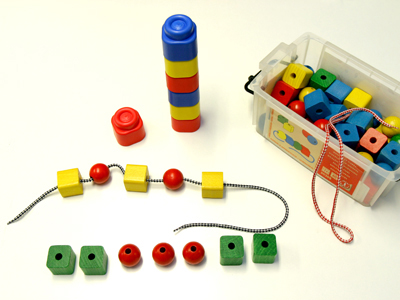

Descripción: Colección de piezas y otras muestras de series a proponer a los niños y niñas, tanto para Infantil como para Primaria.
Utilidad: Sirve para formar series a partir de un modelo o patrón. Las series son
sucesiones en las que se repite tantas veces como se quiera un modelo dado teniendo en cuenta
porejemplo sus cualidades (forma o color) o el número de elementos. En Primaria, proponemos series en forma inversa, o sea, dada la serie hecha, deducir cuál es el elemento básico o "modelo" capaz de generarla.
Nivel: Parvulario y primer curso de primaria.
Procedencia: Material: ABACUS (material Toyland, SA. "Jocdi-Goula").
Fuente: GAMAR CL-NO-04
|
 |